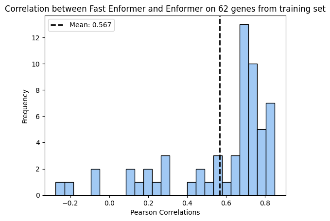
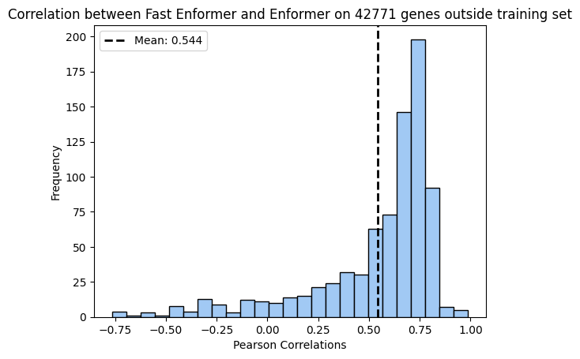

import os
import h5py
from scipy import stats
import numpy as np
import pandas as pd
import matplotlib.pyplot as plt
import seaborn as sns
colors = sns.color_palette("pastel")
# @title `variant_centered_sequences`Performance of genes outside training set
with h5py.File(f'/grand/TFXcan/imlab/data/enformer_training_data/basenji_data_h5/no_groups_popseq_revised_order/test_pop_seq.hdf5') as f:
training_intervals = f['query_regions'][()]chroms = np.unique(training_intervals[:, 0])
chr_dict = {chr: training_intervals[training_intervals[:, 0] == chr] for chr in chroms}output_dir = "/eagle/AIHPC4Edu/sabrina/Br_prediction_from_founders"
outputs = []
for file in os.listdir(output_dir):
df = pd.read_csv(os.path.join(output_dir, file), index_col=0)
outputs.append(df)
haplo_expr = pd.concat(outputs, axis=1)ortho_genes = pd.read_csv("/home/s1mi/enformer_rat_data/annotation/rn7_hg38.ortholog_genes.txt", sep = "\t")
hg38_annot = pd.read_csv("/home/s1mi/enformer_rat_data/annotation/hg38.protein_coding_TSS.txt", sep="\t")
gene_annot = pd.merge(ortho_genes, hg38_annot, how = "inner", left_on = "hsapiens_homolog_ensembl_gene", right_on = "ensembl_gene_id")
gene_annot = gene_annot[gene_annot['ensembl_gene_id_x'].isin(haplo_expr.columns)]training_genes = []
for _, row in gene_annot.iterrows():
rn7_gene = row['ensembl_gene_id_x']
chr = int(row['chromosome_name'])
tss = int(row['transcription_start_site'])
if chr in chr_dict.keys():
for interval in chr_dict[chr]:
if ((tss >= interval[1]) & (tss <= interval[2])):
training_genes.append(rn7_gene)
continuepred_expr = pd.read_csv("/home/s1mi/enformer_rat_data/output/Br_human_predicted_expression.csv", index_col=0)
gene_list = gene_annot['ensembl_gene_id_x'].unique()
excluded_genes = [gene for gene in gene_list if gene not in training_genes]
pred_expr = pred_expr[gene_list]
haplo_expr = haplo_expr[gene_list]741::: {.cell 0=‘c’ 1=‘o’ 2=‘d’ 3=‘e’ 4=‘-’ 5=‘f’ 6=‘o’ 7=‘l’ 8=‘d’ 9=‘:’ 10=‘t’ 11=‘r’ 12=‘u’ 13=‘e’ execution_count=24}
output_pred_cors = pd.DataFrame(columns = ["r", "pval"], index = gene_list)
for gene in training_genes:
corr, pval = stats.pearsonr(pred_expr.loc[:, gene].values, haplo_expr.loc[:, gene].values)
output_pred_cors.loc[gene] = [corr, pval]
plt.hist(output_pred_cors["r"], bins=25, edgecolor='black', color=colors[0]) # 'bins' determines the number of bins or bars
plt.title(f'Correlation between Fast Enformer and Enformer on {len(training_genes)} genes from training set')
plt.xlabel('Pearson Correlations')
plt.ylabel('Frequency')
mean = np.mean(output_pred_cors["r"])
plt.axvline(mean, color='black', linestyle='dashed', linewidth=2, label=f'Mean: {mean:.3f}')
plt.legend()
# Display the plot
plt.show()/home/s1mi/.conda/envs/ml-python/lib/python3.10/site-packages/numpy/lib/histograms.py:824: RuntimeWarning: invalid value encountered in greater_equal
keep = (tmp_a >= first_edge)
/home/s1mi/.conda/envs/ml-python/lib/python3.10/site-packages/numpy/lib/histograms.py:825: RuntimeWarning: invalid value encountered in less_equal
keep &= (tmp_a <= last_edge)
:::
::: {.cell 0=‘c’ 1=‘o’ 2=‘d’ 3=‘e’ 4=‘-’ 5=‘f’ 6=‘o’ 7=‘l’ 8=‘d’ 9=‘:’ 10=‘t’ 11=‘r’ 12=‘u’ 13=‘e’ execution_count=25}
output_pred_cors = pd.DataFrame(columns = ["r", "pval"], index = gene_list)
for gene in excluded_genes:
corr, pval = stats.pearsonr(pred_expr.loc[:, gene].values, haplo_expr.loc[:, gene].values)
output_pred_cors.loc[gene] = [corr, pval]
plt.hist(output_pred_cors["r"], bins=25, edgecolor='black', color=colors[0]) # 'bins' determines the number of bins or bars
plt.title(f'Correlation between Fast Enformer and Enformer on {len(excluded_genes)} genes outside training set')
plt.xlabel('Pearson Correlations')
plt.ylabel('Frequency')
mean = np.mean(output_pred_cors["r"])
plt.axvline(mean, color='black', linestyle='dashed', linewidth=2, label=f'Mean: {mean:.3f}')
plt.legend()
# Display the plot
plt.show()/home/s1mi/.conda/envs/ml-python/lib/python3.10/site-packages/scipy/stats/_stats_py.py:4781: ConstantInputWarning: An input array is constant; the correlation coefficient is not defined.
warnings.warn(stats.ConstantInputWarning(msg))
/home/s1mi/.conda/envs/ml-python/lib/python3.10/site-packages/numpy/lib/histograms.py:824: RuntimeWarning: invalid value encountered in greater_equal
keep = (tmp_a >= first_edge)
/home/s1mi/.conda/envs/ml-python/lib/python3.10/site-packages/numpy/lib/histograms.py:825: RuntimeWarning: invalid value encountered in less_equal
keep &= (tmp_a <= last_edge)
:::